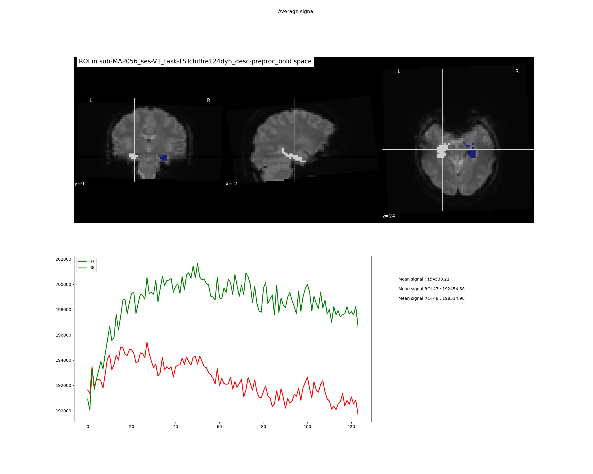

PlotSignalROI brick¶
Plot signals from ROI using a segmentation file with label¶
Example of png file obtained:
{kind=link}
Mandatory inputs parameters:
- in_file (a string representing an existing file)
Input image (valid extensions: [.nii, .nii.gz]). Image from which signals have been extracted.
ex. '/home/username/data/raw_data/sub-001_bold.nii'
- labels (a list of integer)
List of the labels of the ROI to plot
ex. ['47', '48']
- rois_files (a string representing existing files or a list of string representing existing files)
Could be either one image with all the ROI or one image by ROI
ex. '/home/username/data/raw_data/native_structures_sub-001_bold_space_concate_47_48.nii'
ex. ['/home/username/data/raw_data/native_structures_sub-001_bold_space_47.nii', '/home/username/data/raw_data/native_structures_sub-001_bold_space_48.nii']
- signals (a pathlike object or string representing an existing file)
Extracted signal for each ROI in a csv file
ex. '/home/username/data/raw_data/native_structures_sub-001_bold_space_1.csv'
Optional inputs:
- signals_whole_brain (a pathlike object or string representing an existing file)
Extracted signal for all brain in a csv file. If if needed to have the average signal in the whole brain.
ex. '/home/username/data/raw_data/native_structures_sub-001_bold_space_47_48.csv'
Outputs parameters:
- out_png (a pathlike object or string representing a file)
Out png file
ex. '/home/username/data/raw_data/sub-001_bold_extracted_signals_47_48.png'